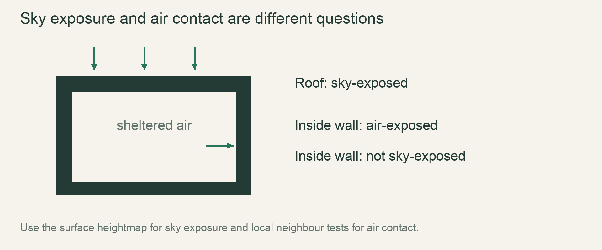

M1 / Water & heatLesson 34 of 100 · ~5 min reading + build time
Exchange heat across an edge
Exchange heat across one closed edge with stable direction and paired accounting.
Previously: Exchange materials by density. Keep that working result available before starting this lesson.
Why we need this now
A lava reaction depends on heat moving between cells, but a full landscape makes a faulty transfer hard to diagnose. Start with two cells. If the pair has no external source or sink, one cell’s gain should correspond to the other’s loss under the selected model.
Your result: Exchange heat across one closed edge with stable direction and paired accounting.

01Name the model before the formula
Our initial fixture gives the two cells equal heat capacity and uses integer temperature-like values. Under that simplified assumption, equal-and-opposite temperature changes preserve the pair’s sum. Real materials with different heat capacities require a more careful energy model; do not label this fixture a complete thermodynamic simulation.
The purpose is to establish update direction, bounded transfer and scan consistency. Hotter should cool, colder should warm, and equal values should remain equal. A transfer rate must not overshoot equilibrium and make the cells oscillate merely because the update was applied too aggressively.
02Read the old pair, then apply both changes
Compute the transfer from the two old values. Add it to the cooler cell and subtract it from the warmer. Do not update the first and then use that already-changed number as the second cell’s old state. That creates scan-order dependence and can break accounting.
For a multi-neighbour grid, choose an explicit old-state/delta scheme or another justified update method. The pair fixture does not automatically prove all neighbour interactions are safe. Write the full per-tick read/write footprint before combining this with parallel chunk scheduling.
03Make rounding a documented policy
Integer storage forces small transfers to round. A deterministic floor may eventually stall near equilibrium; randomized rounding may reduce that bias but needs the coordinate/step-based RNG contract. Choose the policy deliberately and test its consequences. The example below uses a bounded integer quarter-difference transfer as a readable fixture.
It preserves the pair’s sum and never reverses hot/cold ordering, but it can stop when the difference is below4. That limitation is visible and acceptable for the teaching experiment; production tuning must meet the required visible reaction deadlines and define behavior at the stored temperature resolution.
04Separate closed accounting from sources and ambient
A closed pair test excludes lava source maintenance, burning fuel, ambient exchange and phase-change policies. Those may intentionally add, remove or transform heat under the game’s approximations. Keep source/sink terms explicit so a conservation assertion is applied only where its assumptions hold.
Test the pair in both orientations, at equality and near the integer rounding threshold. Then integrate a small row fixture with a fixed update scheme. End the episode by showing that reversing storage order does not reverse the physical direction of transfer or create heat under the closed-fixture rules.
Read → predict → run → change
Walk through the working example
Complete focused example — src/main.rs
Download this worked example ↧
fn exchange(a:i32,b:i32)->(i32,i32) {
let transfer=(a-b)/4;
(a-transfer,b+transfer)
}
fn main() {
for (a,b) in [(100,0),(0,100),(20,20),(23,20)] {
let (next_a,next_b)=exchange(a,b);
assert_eq!(next_a+next_b,a+b);
assert!((next_a-next_b).abs()<=(a-b).abs());
println!("({a},{b}) -> ({next_a},{next_b})");
}
}Read what each part does
- The equal-capacity fixture uses i32 intermediates to avoid i16 subtraction overflow.
- Production storage conversion still needs range checks.
- The toy sum is not a universal energy law for unequal-capacity materials.
Expected result
(100,0) -> (75,25); (0,100) -> (25,75); equal20 values remain unchanged; (23,20) stalls under the explicitly documented integer rounding policy.Exact version numbers, paths and compiler wording may differ. Compare the behavior and file locations, not incidental output formatting.
Prediction · repair · transfer
Exercises you actually do
Write a prediction or make an attempt before opening a solution. Use the hint if stuck; then compare reasoning and verify with the stated check. A different implementation is fine when it satisfies the same contract.
Reverse orientation
Swap the initial hot and cold positions and compare the outputs.
Need a hint?
Physical direction follows values, not left/right storage labels.
Worked solution
The outputs mirror each other. If one orientation creates a different sum, inspect sequential old-state usage or sign handling.
How to verify your result
The pair’s sum and directional behavior agree in both orientations.
Expose a sequential bug
Update a first, then compute b’s transfer from the changed a.
Need a hint?
The second calculation no longer sees the same old edge.
Worked solution
Use a deliberately broken copy and show its accounting or order discrepancy. Restore one transfer computed from the original pair, then apply both deltas.
How to verify your result
The closed-pair test rejects the broken update order.
Name the rounding limit
Explain why23 and20 do not converge further in this example.
Need a hint?
Integer division discards the fractional quarter difference.
Worked solution
The transfer is0 because3/4 is0 with integer truncation. Production may use finer state or a documented rounding scheme, but must test determinism and deadlines after that choice.
How to verify your result
The limitation is stated rather than hidden as exact equilibrium physics.
When it goes wrong
Start with the observed symptom. Change one assumption at a time instead of pasting fixes until the error disappears.
Heat appears in a closed pair
What is happening: Both sides received positive change or old-state reads were inconsistent.
Try this: Compute one transfer and apply equal-and-opposite deltas.
Temperatures oscillate around equilibrium
What is happening: The selected transfer is too large for the update scheme.
Try this: Bound the rate and test monotonic approach under the model.
Small differences never change
What is happening: Integer rounding suppresses sub-unit transfers.
Try this: Document the resolution and choose a tested rounding policy if required by visible reactions.
Explain it without the example
What result would suggest heat is being created by the update order?
Reasoning to compare
A closed pair's combined heat measure changes without a defined source or sink. Pairwise accounting tests expose that error.
Self-check only: test a prediction or ask your tutor if anything still feels arbitrary.
For your YouTube series
Turn the lesson into an episode
Open with the problem or result
A lava reaction depends on heat moving between cells, but a full landscape makes a faulty transfer hard to diagnose. Start with two cells. If the pair has no external source or sink, one cell’s gain should correspond to the other’s loss under the selected model.
Teach in this order
- Name the model before the formula
- Read the old pair, then apply both changes
- Make rounding a documented policy
- Separate closed accounting from sources and ambient
Record this demonstration
Exchange heat across one closed edge with stable direction and paired accounting.
Close with what the viewer can now explain
Explain the result without reading the code, make one predicted change, then show the observed result.
A lesson can span several recordings. The episode beats are a teaching outline, not a claim that every viewer learns at the same speed.
Finish with evidence
The cold cell warms, the hot cell cools, and equilibrium stays stable. Rounding policy and any source/sink exceptions are documented.
Make one small variation without copying: predict it, run it and explain any difference. On another day, repeat one exercise from memory before starting the next lesson. Ask your tutor about any step you can execute but cannot explain.
This is an attempt marker, not a grade. Learning records are written only after demonstrated understanding.
Primary sources for this lesson
Use sources to verify the mechanism. The lesson itself supplies the instructions; the links are not a substitute for teaching them.